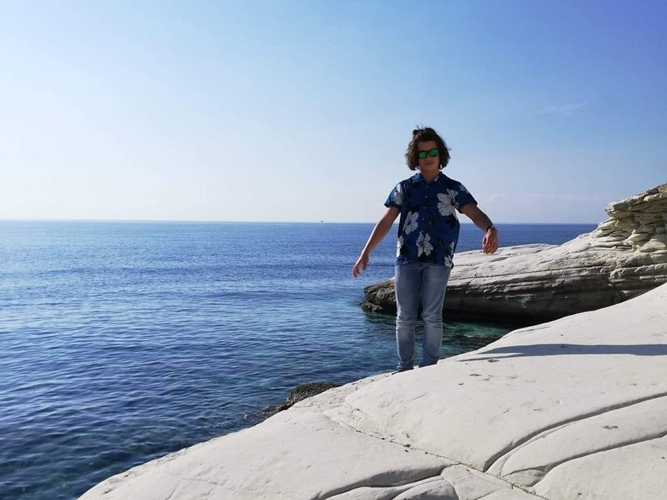
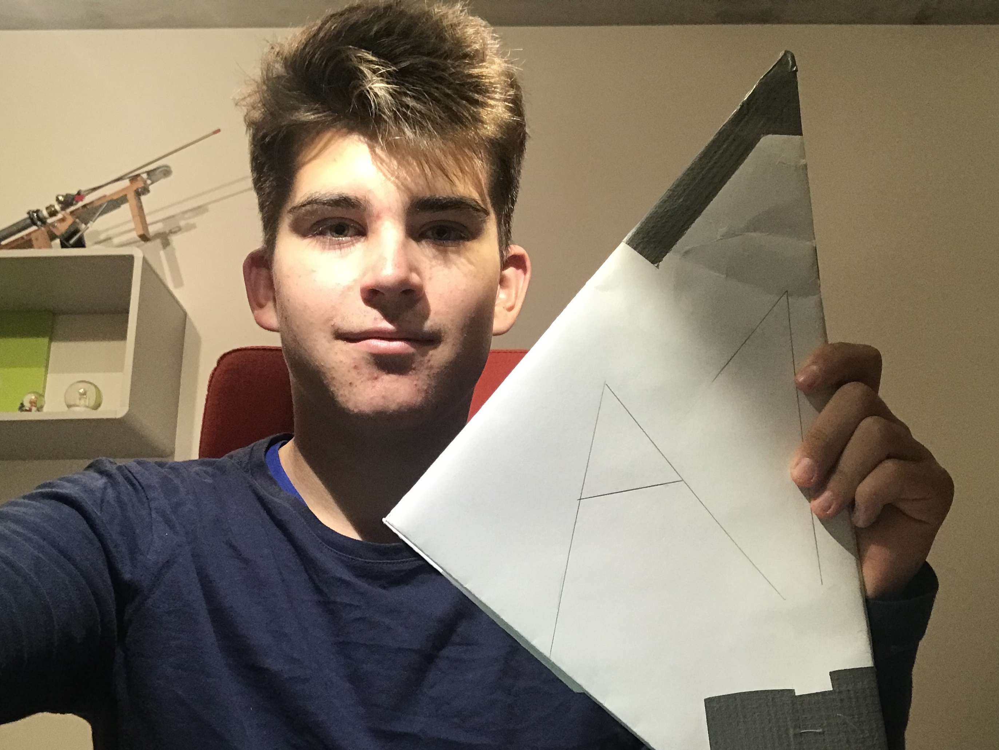

Nazywam się Maciej Sztaba. Jestem uczniem liceum numer 1 w Gliwicach, interesuje się programowaniem, żeglarstwem i ekonomią. Programuje jako pasjonat w językach python, c# oraz w technologiach webowych. Mam 15 lat, od dziecka mieszkam w Gliwicach, w dzielnicy źerniki. Żyje w domu jednorodzinym, kocham to miasto jako lokalny patriota i mieszkaniec. W zeszłym roku zdałem patent żeglarski, dzięki czemu mogę teraz pływać na jachtach. Dziękuje za poświęcenie swojego czasu na przeczytanie tego.

Nazywam się Maciej Strzępka. Mam 15 lat. Lubie budować wyrzutnie pneomatyczne i jeździć na rowerze. Interesuje się pneomatyką od kiedy stwierdziłem, iż nerfy strzelają zbyt słabo. Rozwijam swoją pasje dzięki czemu robie coraz lepsze wyrzutnie. Niedawno kupiłem zawór elektromagnetyczny, który w połączeniu z pompką, którą można napompować zbiornik do ponad 12 BAR daje niesamowity efekt. W pneumatyce interesuje mnie to, że części pasują do siebie niczym jak klocki Lego.
Nazywam się Dariusz Lewandowski. Mam 14 lat. Chodzę do liceum nr 1 w Gliwicach. Od urodzenia mieszkam w Gliwicach na Trynku. Moimi zainteresowaniami są min. żeglarstwo, komputery oraz gry. Dodatkowo Bardzo lubię jeździć na rowerze w terenie. W terenie nie jeżdżę tylko rowerem lecz mam też motocykl (Sherco Bultaco 250) jest to motor do trialu tz. do jazy i skakania po kamieniach. W tym roku zamierzam zdać patent żeglarski. Ponadto jestem harcerzem w 6 HDŻ w Rybniku od roku.